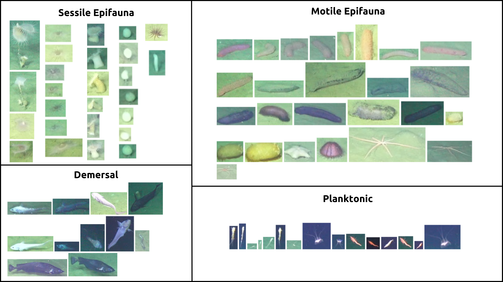

17. Localizing the OceanCV FirstPass Model to a New Dataset#
17.1. Learning Objectives#
By the end of this lesson, you will be able to:
Understand how to utilize the OceanCV FirstPass model as a foundational marine ROI detector.
Implement a human-in-the-loop pipeline to adapt a generic “object” detector to specific biological classes.
Fine-tune a YOLO model using domain-specific weights for optimal deep-sea performance.
Analyze model sensitivity across different confidence and IoU thresholds.
17.2. Introduction to OceanCV FirstPass#
The OceanCV FirstPass model is a broadly marine-specific Region of Interest (ROI) detector. Unlike general-purpose models trained on terrestrial data (like COCO), FirstPass was specifically trained on diverse deep-sea datasets to identify biological and geological features of interest in complex underwater environments.
For further reading on the human-in-the-loop pipeline and the methodology behind this approach, refer to: Standardizing marine biological imagery analysis: A human-in-the-loop pipeline for deep-sea object detection
Localization in this context refers to the process of adapting this foundational detector to your specific research needs. By starting with FirstPass weights, we save significant time because the model already “understands” marine textures, lighting, and common morphologies. Our task is to take these generic detections and assign them meaningful biological labels in a targeted training run.
17.3. Dataset Preparation and Inference#
For this lesson, we will use an example ROV transect near a methane seep. We will first extract representative frames and then use the FirstPass model to generate initial “pre-labels” that we can later refine.
17.3.1. 1. Setup Environment and Download Assets#
!pip install ultralytics
!wget -O transect_compressed.mp4 "https://huggingface.co/datasets/OceanCV/ROVTransectCompressed/resolve/main/transect_compressed.mp4?download=true"
import os
import cv2
from ultralytics import YOLO
# Create folders for processing
subset_folder = "frames"
os.makedirs(subset_folder, exist_ok=True)
video_path = "transect_compressed.mp4"
cap = cv2.VideoCapture(video_path)
sample_rate = 32 # Extract every 32nd frame
frame_count = 0
print("Extracting frames...")
while cap.isOpened():
ret, frame = cap.read()
if not ret: break
if frame_count % sample_rate == 0:
cv2.imwrite(os.path.join(subset_folder, f"frame_{frame_count}.jpg"), frame)
frame_count += 1
cap.release()
print(f"Extracted {len(os.listdir(subset_folder))} frames.")
17.3.2. 2. Generate Pre-labels with FirstPass#
We load the FirstPass model directly from Hugging Face and run inference on our extracted frames. We use a low confidence threshold (0.10) to capture as many potential objects as possible for human review.
# Load the OceanCV FirstPass ROI detector
model = YOLO("https://huggingface.co/OceanCV/OceanCV_FirstPass/resolve/main/OceanCV_FirstPass.pt")
# Run inference to find all potential objects
model.predict(
source=subset_folder,
save_txt=True,
save=True, # Add this to save the annotated images, not strictly necessary but great for stitching a quick video
imgsz=1024,
conf=0.10,
iou=0.5,
project="localization",
name="first_pass"
)
17.4. Human-in-the-Loop: Localizing Annotations#
Now that the FirstPass model has identified regions of interest, we need to transform these generic “object” detections into biological classes. This is the Human-in-the-Loop phase.
For this example, you will classify the detected objects into four broad ecological tiers:
Sessile Epifauna: Attached organisms (e.g., anemones, sponges).
Motile Epifauna: Bottom-dwelling crawlers (e.g., urchins, sea stars).
Demersal: Swimming animals near the seafloor (e.g., benthic fish).
Planktonic: Organisms drifting in the water column.

Fig. 17.1 OOI/UW/NSF Carter 2025#
17.4.1. Workflow:#
Import to Labeling Environment: Download the frames and the
.txtlabels generated above. Import them into your preferred labeling environment (e.g., CVAT, LabelImg, or cloud-based managers).Review & Reclassify: Go through the detections. Since FirstPass has already drawn the boxes, your job is to change the class from “object” to one of the four tiers.
Export: Once refined, export the dataset in YOLO format.
import zipfile
import os
def package_for_labeling(img_folder, label_folder, output_zip):
with zipfile.ZipFile(output_zip, 'w', zipfile.ZIP_DEFLATED) as zipf:
# Add images
for f in os.listdir(img_folder): zipf.write(os.path.join(img_folder, f), arcname=f"images/{f}")
# Add labels
if os.path.exists(label_folder):
for f in os.listdir(label_folder): zipf.write(os.path.join(label_folder, f), arcname=f"labels/{f}")
package_for_labeling("frames", "localization/first_pass/labels", "dataset_for_labeling.zip")
print("Download 'dataset_for_labeling.zip' to import into your labeling environment.")
17.5. Training the Localized Model#
After labeling, you are ready to train a model tailored to your specific classes. We will use the OceanCV FirstPass model again, but this time as a pretrained checkpoint to transfer its deep-sea knowledge into our new 4-class classifier.
from ultralytics import YOLO
# Load FirstPass as the starting checkpoint
model = YOLO("OceanCV_FirstPass.pt")
# Train on your localized 4-class dataset
results = model.train(
data="your_dataset.yaml",
epochs=100,
imgsz=1024,
batch=-1,
plots=True
)
17.6. Threshold Analysis#
Once trained, it’s vital to understand how the model behaves at different sensitivity levels. Use the code below to visualize predicted results across a grid of Confidence and Intersection over Union (IoU) thresholds.
import cv2
import matplotlib.pyplot as plt
from ultralytics import YOLO
model = YOLO("https://huggingface.co/OceanCV/OceanCV_FirstPass/resolve/main/OceanCV_FirstPass.pt")
image_path = "frames/frame_0.jpg"
threshold_settings = [(0.01, 0.5), (0.5, 0.5), (0.1, 0.1), (0.1, 0.9)]
fig, axes = plt.subplots(1, 4, figsize=(24, 6))
for ax, (conf, iou) in zip(axes, threshold_settings):
results = model.predict(image_path, conf=conf, iou=iou, verbose=False)
res_plotted = results[0].plot()
ax.imshow(cv2.cvtColor(res_plotted, cv2.COLOR_BGR2RGB))
ax.set_title(f"Conf: {conf} | IoU: {iou}")
ax.axis('off')
plt.tight_layout()
plt.show()
17.7. Ecological Applications: Counting in Zones#
Tracking organisms within a defined region (e.g., the bottom third of the frame) allows for standardized ecological surveys. This minimizes noise from drifting plankton in the background and focuses the analysis on the benthic community.
from ultralytics import solutions
# Example setup for a counting zone
counter = solutions.ObjectCounter(
region=[(0, 700), (1024, 700), (1024, 1024), (0, 1024)], # Bottom region
model="OceanCV_FirstPass.pt",
conf=0.25,
iou=0.45
)
print("Counting zone initialized.")